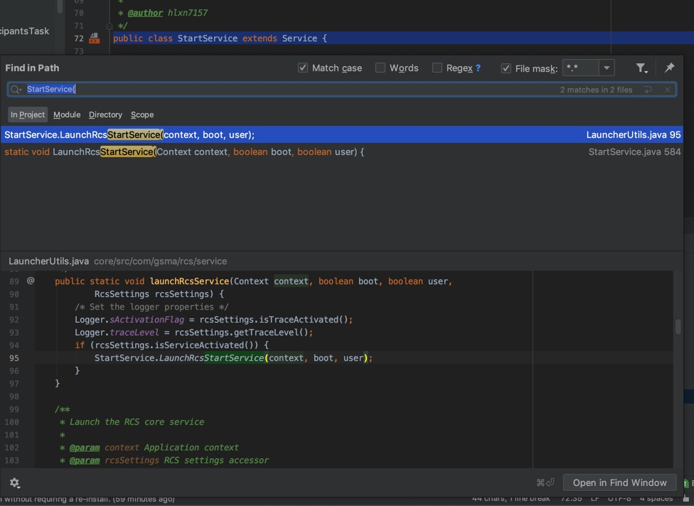
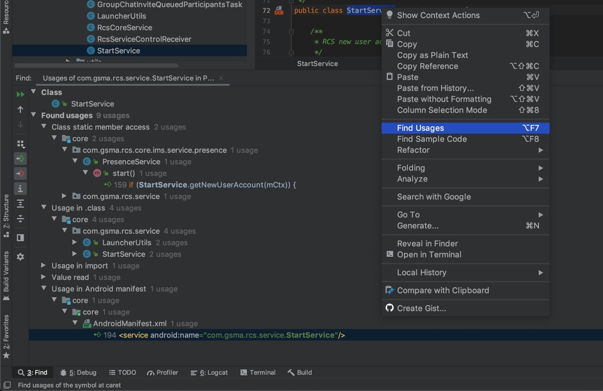
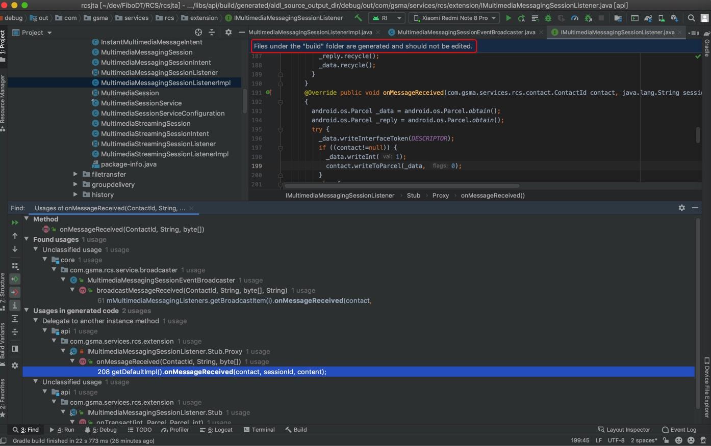

AS智能之处
基于IntelliJ IDEA的Android Studio的智能之处
Android Studio是基于IntelliJ IDEA的。
而IntelliJ IDEA是Java的IDE，以智能著称。
下面记录遇到的，觉得智能的地方
用Find Usages去查找被调用地方，而不要仅仅用搜索
对于
src/com/gsma/rcs/service/StartService.java
的：
public class StartService extends Service {
想要去找有哪些地方调用了。
结果搜：
StartService(
只找到2处：

其实是没有真正找到被调用的地方。
而后来想起来了，换用：Find Usages

就可以找到，真正被调用的多处地方。
是效率更高，更准确的。
即Find Usages还是很准很好用的。
自动识别build目录下的文件
打开一个java文件，自动提示：
Files under the build folder are generated and should not be edited

此处文件路径是：
build/generated/aidl_source_output_dir/debug/out/com/gsma/services/rcs/extension/IMultimediaMessagingSessionListener.java
即：
在build目录下的文件，是（项目源码编译后）生成的，不应该被编辑
即：提示你，不要在这里编译，而应该去找源码编辑
很是智能，防止你不小心浪费了时间在编译生成的地方修改代码。